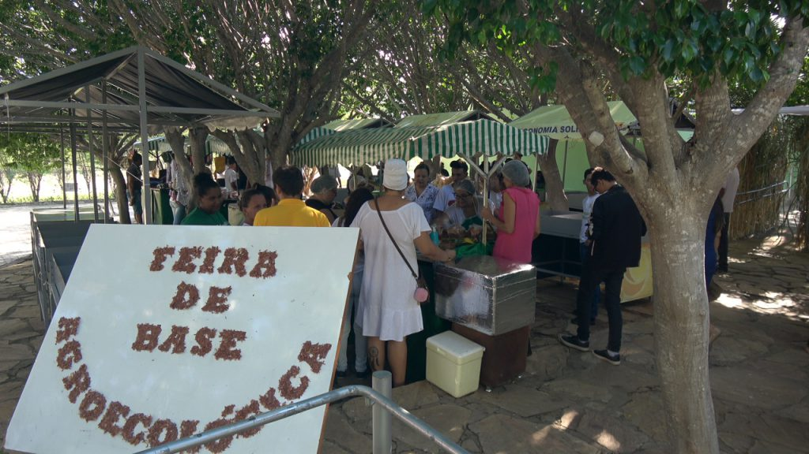

X SEAPO
Seminário de Agroecologia e Produção Orgânica
IF Baiano · Campus Guanambi · Bahia
Dez edições construindo ciência com cheiro de terra. O X SEAPO reúne agricultores, pesquisadores, estudantes, extensionistas e comunidade em torno da agroecologia, da produção orgânica e do futuro do Sertão Produtivo.
Um dia inteiro de agroecologia no Sertão
O X SEAPO celebra dez anos de um seminário que cresceu com o território e com as pessoas que o fazem acontecer.
Palestras
Especialistas nacionais sobre emergência climática, conhecimento indígena e produção orgânica na Bahia.
Minicursos
Mais de 10 oficinas simultâneas: pragas, aves orgânicas, irrigação, adubação, PANCs, PNAE e muito mais.
Certificação
Entrega oficial dos certificados de Conformidade Orgânica a agricultores do território.
Stands & Feira
Expositores e produtos a confirmar — fique ligado nas novidades!
21 de agosto de 2026
Programação preliminar, sujeita a ajustes. Confirme os horários próximo ao evento.
🌅 Manhã — Auditório Principal
☀️ Tarde — Minicursos Simultâneos (13h às 17h)
Tem muito mais vindo por aí
Expositores, produtos, saberes e biodiversidade — tudo ao ar livre, ao longo de todo o dia. Os stands serão revelados em breve.
Inscrições abrindo em breve
A programação está sendo finalizada e as inscrições serão abertas em breve. Fique de olho nas nossas redes sociais para não perder nenhuma novidade do maior seminário de agroecologia do Sertão Produtivo.
Nove edições que semearam o X SEAPO
Desde 2017, o SEAPO reúne ciência, extensão e agricultura familiar no IF Baiano Campus Guanambi.

Reviva as edições anteriores
Palestras, registros e momentos das edições que construíram o X SEAPO.
VII SEAPO
Produção orgânica, oficinas e feira agroecológica.
VI SEAPO
Palestras e atividades da sexta edição.
III SEAPO
Memória da feira de base agroecológica.